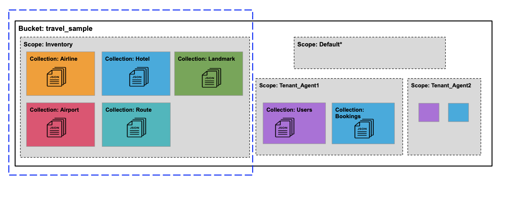

Travel App Data Model
An overview of the travel sample application data model and documents.
Our tutorial introduction to using the SDK uses the Travel Sample data bucket.
The Travel App data model
The data model for the travel app uses several distinct document types: airline, route, airport, and hotel.
The model for each kind of document contains:
-
A key that acts as a primary key
-
An
idfield that identifies the document -
A
typefield that identifies the kind of document
The following figure illustrates the relationship between the different kinds of documents in the Travel App. It shows the primary key, ID, and type fields that each document has, plus a few representative fields in each type of document.
Landmark documents are not used in the travel-sample application, which focuses on a more specific subset of point of interests that have their own type: hotels.
Hotels, like landmarks, don’t have relations to other types.
Airline documents
Airline documents contain details about airlines such as the name of the airline, International Air Transport Association (IATA) two-character airline designator, International Civil Aviation Organization (ICAO) three-character airline designator, and the airline call sign.
For airline documents, the value of the type field is airline.
airline_24 This is the key, which also acts as a primary key
{
"id": 24,
"type": "airline", This is the type identifier for the document
"name": "American Airlines",
"iata": "AA",
"icao": "AAL",
"callsign": "AMERICAN",
"country": "United States"
}Route documents
Route documents contain details about flights such as the name of the airline, departure airport, destination airport, number of stops during the flight, type of aircraft, flight number, and flight schedule.
Route documents also contain a foreign key identifier, airlineid, that is used to retrieve the document that contains information about the airline that flies the route.
The value of the airlineid field is identical to the key for the corresponding airline document.
For route documents, the value of the type field is route.
route_5966 This is the key, which also acts as a primary key
{
"id": "5966",
"type": "route", This is the type identifier for the document
"airline": "AA",
"airlineid": "airline_24", This is the foreign key identifier to an airline document
"sourceairport": "MCO",
"destinationairport": "SEA",
"stops": "0",
"equipment": "737",
"schedule": [
{"day": 1, "utc": "13:25:00", "flight": "AA788"},
{"day": 4, "utc": "13:25:00", "flight": "AA419"},
{"day": 5, "utc": "13:25:00", "flight": "AA519"}
]
}Airport documents
Airport documents contain details about airports such as name, location, time zone, ICAO four-character alphanumeric airport code, and Federal Aviation Administration (FAA) location identifier.
For airport documents, the value of the type field is airport.
airport_3577 This is the key, which also acts as a primary key
{
"id": 3577,
"type": "airport", This is the type identifier for the document
"airportname": "Seattle Tacoma Intl",
"city": "Seattle",
"country": "United States",
"faa": "SEA",
"icao": "KSEA",
"tz": "America/Los_Angeles",
"geo": {
"lat": 47.449,
"lon": -122.309306,
"alt": 433
}
}Hotel documents
Hotel documents are all about a specific type of point of interests: hotels. They include information such as a name, description, location (coutry, state, city and address), price and services, and even customer reviews.
For hotel documents, the value of the type field is hotel.
hotel_10180 This is the key, which also acts as a primary key
{
"address": "8301 Hollister Ave",
"checkin": "12PM",
"checkout": "4PM",
"city": "Santa Barbara",
"country": "United States",
"description": "Located on 78 acres of oceanfront property, this resort is an upscale experience that caters to luxury travelers. There are 354 guest rooms in 19 separate villas, each in a Spanish style. Property amenities include saline infinity pools, a private beach, clay tennis courts, a 42,000 foot spa and fitness center, and nature trails through the adjoining wetland and forest. The onsite Miro restaurant provides great views of the coast with excellent food and service. With all that said, you pay for the experience, and this resort is not for the budget traveler. In addition to quoted rates there is a $25 per day resort fee that includes a bottle of wine in your room, two bottles of water, access to fitness center and spa, and internet access.",
"free_breakfast": true,
"free_internet": false,
"free_parking": false,
"geo": {
"accuracy": "ROOFTOP",
"lat": 34.43429,
"lon": -119.92137
},
"id": 10180,
"name": "Bacara Resort \u0026 Spa",
"pets_ok": false,
"price": "$300-$1000+",
"reviews": [
{
"author": "Orval Lebsack",
"content": "I stayed there with a friend for a girls trip around St. Patricks Day. This was my third time to NOLA, my first at Chateau Lemoyne. The location is excellent....very easy walking distance to everything, without the chaos of staying right on Bourbon Street. Even though its a Holiday Inn, it still has the historical feel and look of NOLA. The pool looked nice too, even though we never used it. The staff was friendly and helpful. Chateau Lemoyne would be hard to top, considering the price.",
"date": "2013-10-26 15:01:39 +0300",
"ratings": {
"Cleanliness": 5,
"Location": 5,
"Overall": 4,
"Rooms": 4,
"Service": 4,
"Sleep Quality": 5,
"Value": 4
}
}
],
"state": "California",
"type": "hotel", This is the type identifier for the document
"url": "http://www.bacararesort.com/",
"vacancy": true
}
}N1QL query anatomy
The Couchbase Query API is a powerful tool for efficient retrieval of information from a document data store. Here’s an example of a query that finds flights between Seattle-Tacoma International Airport (SEA) and Orlando International Airport (MCO), followed by a description of what’s happening in the query:
SELECT a.name, s.flight, s.utc, r.sourceairport, r.destinationairport, r.equipment
FROM `travel-sample`.inventory.route r
UNNEST r.schedule s
JOIN `travel-sample`.inventory.airline a ON KEYS r.airlineid
WHERE r.sourceairport='SEA' AND r.destinationairport='MCO' AND s.day=6
ORDER BY a.nameN1QL provides JOIN functionality, something previously not possible in a document database. For two documents to be joined in the result of a SELECT statement, one of them must contain a field whose value is equal to the Couchbase key of the other document. The following example shows two documents that demonstrate that requirement and a SELECT statement that joins them:
"keyA" is the Couchbase KV key for Doc A.
Doc A: { some fields }
Doc B: { some fields "joinField": "keyA" }
SELECT * FROM default b JOIN default a ON KEYS b.joinField
The data model for the travel application includes an airlineid field in each route document.
That airlineid field is used as a foreign key identifier and corresponds to the key for an airline document.
To select the airline name a.name, the query uses the following clause: JOIN `travel-sample`.inventory.airline AS a ON KEYS r.airlineid.
One of the powerful features available in the N1QL query language is the ability to UNNEST or flatten, the results returned in the SELECT statement.
This is frequently needed when working with JSON documents, which may have rich heirarchies.
In the data model for the travel application, each route document contains a nested collection of schedule documents.
To alleviate a complicated JSON parsing code pattern for the return results, you can have the query execution UNNEST the schedule documents, so they become the root-level fields in the returned results.
Standard SQL syntax is used in the WHERE clause for the SELECT statement.
The result set is ordered by the a.name field, which contains the airline name.
Refer to the Querying with N1QL section for more information on using N1QL with the SDKs.
Collections
With the introduction of Collections in the 7.0 release of the Couchbase Data Platform, a new version of the Travel Sample application is provided. The application showcases the use of collections and scopes to represent a multi-tenant approach to organizing user and flight data.
To try this out you will need Couchbase Server 7.0 or higher and the travel-sample bucket configuration.

The updated bucket introduces tenant agent scopes, users and bookings collections to allocate data into more logical groupings.
Note that the inventory scope is not multi-tenanted as its collection data will be shared across the tenant agents.
Let’s take a quick look at the collections within the agent scopes:
-
users
-
bookings
The travel sample application will create/update documents within these new collections when using the flight planner.
The users collection stores user related data such as login details and flights booked:
test_user This is the key, which also acts as a primary key
{
"username": "test_user",
"password": "5f4dcc3b5aa765d61d8327deb882cf99",
"bookings": [
"bf7ad6fa-bdb9-4099-a840-196e47179f03",
"c4fb6f98-76c8-489f-8fae-b0039cd4d2b8",
"2bccc103-4f80-4cac-8faf-e7d2336cd113",
"3503b353-7401-4fcc-bbdd-afe290764b68"
]
}And the bookings collection stores the actual flight information for each booking:
bf7ad6fa-bdb9-4099-a840-196e47179f03 This is the key, which also acts as a primary key
{
"destinationairport": "SFO",
"equipment": "73W 73C 733",
"flight": "WN533",
"flighttime": 7713,
"name": "Southwest Airlines",
"price": 964.13,
"sourceairport": "LAX",
"utc": "11:21:00",
"date": "07/24/2021"
}Each booking is represented by a UUID primary key to ensure the documents are uniquely identifiable.
Further Reading
The Travel Sample data set is embedded in many of our examples.
-
Manage the sample bucket installations with the REST API.
-
Our demonstration indexes use the Travel Sample data set to demonstrate the running of Full Text Searches.